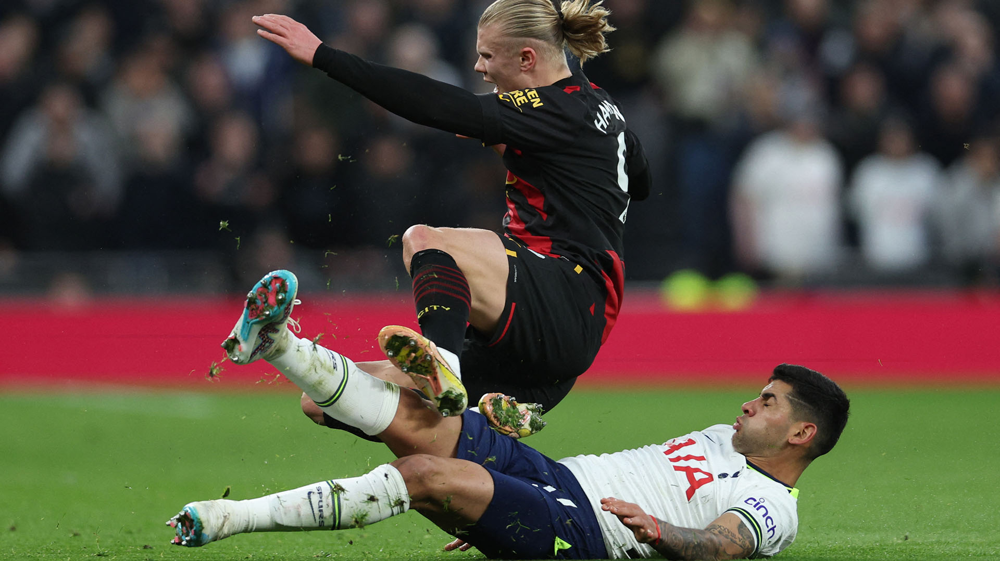

Cuti Romero expulsado, y Tottenham Hotspur, eliminado por Milán
a mala jornada de Champions League para Lionel Messi (PSG fue eliminado por Bayern)
tuvo correlato en otro argentino campeón mundial en Qatar, Cristian “Cuti” Romero.
Tottenham se quedó con diez hombres a los 32, cuando Romero vio por segunda vez la tarjeta
amarilla y complicó la posibilidad del anfitrión de forzar una prórroga. En la primera
ocasión se había llevado por delante a Leão, que le había movido la pelota a último
momento, y en la segunda cortó bruscamente una corrida del capitán Théo Hernández sobre
un costado. En la barrida, el cordobés quedó sentido en la rodilla derecha, y estando
en el suelo fuera del campo, asistido por el cuerpo médico, recibió la tarjeta roja
por parte del árbitro francés Clément Turpin. Cuti ha tenido un post Mundial bastante
áspero: en 11 partidos recibió 7 amonestaciones y 2 expulsiones.